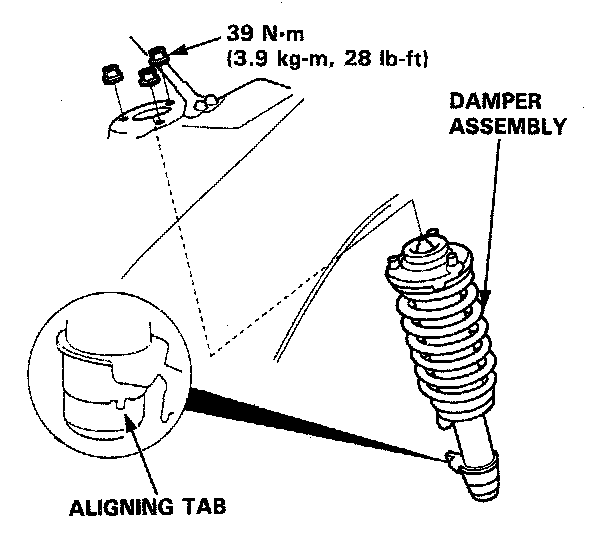
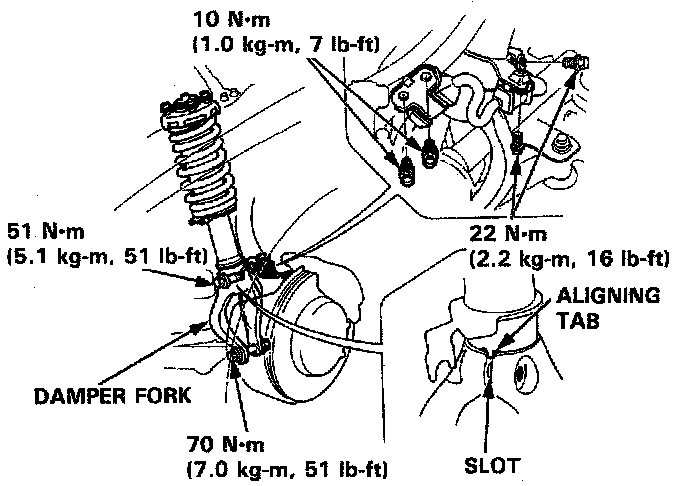

Installation
Installation

1. Loosely install the damper on the frame with the aligning tab facing inside.
2. Install the damper fork on the driveshaft and lower arm. Install the damper in the damper fork so the aligning tab is aligned with the slot in the damper fork.
3. Hand tighten the bolts and nuts.
4. Raise the knuckle with a floor jack until the car just lifts off the safety stand.

NOTE: The bolts and nuts should be tightened with the vehicle's weight on the damper.
5. Tighten the damper pinch bolt.
6. Secure the damper fork bolt with a new 12 mm nut.
7. Secure the damper assembly to the frame with the flange nuts.
8. Install the brake hose clamps.